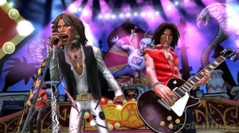

Better Never than Late Game Review-Guitar Hero Aerosmith

I wrote this tirade on this game tape a few months back and it was just lingering in Word Press purgatory. Here is a review of a many months old game that no one really cared about. Including myself.
{kind=link}

Damn Red Octane! You’ve got your target market on lock. I mean, it’s not like the youth of today listen to Hot Topic Presents-Goth Jams 6 or care about the latest Lil’ Mama dance craze song about menstrual cramps. They obviously want to rapidly tap rainbow hued buttons along to a band that was popular when their Dad’s were still hiding under their bunk bed and fanning one out to a centerfold of Cloris Leachman. The developers of Guitar Hero have their finger on the pulse of the gaming demographic and that heart beats Aerosmith!
Seriously though, I want to meet the marketing genius who wet dreamt this tragic amalgamation of granpappy rock and plastic peripheral splendor. Aerosmith probably aren’t even technologically aware enough to recognize an electric toothbrush and I would think it’s a safe bet that Joe Perry thinks a Playstation is an amusement park where he can drop off his bastard child he had with that groupie from Des Moines.
Honestly, I wouldn’t even be playing this game if it had not been for Gamefly forcing me to fill up my queue with unwanted games just so they can actually mail me something since all desirable titles are eternally stricken with “low availability”. I can’t front though, at one time I thoroughly enjoyed the series and I relish the memory of my initial purchase of GH1 and my girlfriend and her friend walking into our apartment and laughing in my face for playing it. I just added that shame to the pile of other humiliations I store in my lower intestine and kept on contributing to my eventual crippling case of arthritis.
{kind=link}
Now down to the actual game. The track list ran me through the emotional gamut of “Hey! My ears aren’t leaking spinal fluid!” to “I think I will wear an I Hate Reggaton shirt in downtown Newark during drug trade rush hour”. The visuals of the game invoke childhood traumas of unwanted doses of high grade acid sneakily slipped into the contents of your Capri Sun by your freshly probated, rarely spoken of uncle. Stephen Tyler’s mouth also appears to be a gateway to a forbidden universe where a Dreamcast is baby Jesus incarnate and Minotaur’s work in Gamestop’s and only recommend triple A titles to dimwitted parents. I can not comment on the other members of Aerosmith because my brain would outright refuse to retain such information and I can not allow them the pleasure of seeing that someone actually Googled their names.
My rating out of 100% is a tube of Fixodent divided by a broken hip multiplied by a prune smoothie garnished with hard ribbon candy.
Related posts

Why Sharp Teeth BJs Are Worse than Not Getting a Rose
"Ask the Doctor” where readers ask questions of the world renounced general practitioner Dr. Charles V. Fullerton Dear Dr. When…
Creature Racing Voted Greatest Video Game Video of All Time
By me. This is one of those videos that you just keep coming back to year after year after year.
Scientists Translate Chihuahua Barks
Scientists translate Chihuahua barks - they're saying "I'm a tiny asshole."

The True Meaning of Thanksgiving: King Kong vs Godzilla
If you were a kid in the 70’s or 80’s living in the NJ/NY area, you know the true meaning…